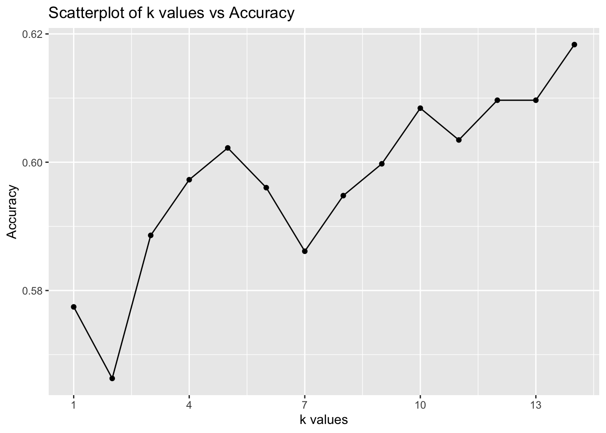

My song is Money Trees - Kendrick Lamar, Jay Rock. I’m a big fan of Kendrick’s music, and especially songs from this album is one of the favorites of mine.
Here is the values of this song from dataset:
danceability: 74
energy: 53
speechiness: 10
acousticness: 7
liveness: 21
valence: 37
BPM: 144
Target variable is of type int, then I converted it to categorical variable (factor).
The target factor variable has 2 categories: 0 or 1. By counting total number of rows for each category, we get that George has 1020 favorite, and 997 disliked songs. Which is interesting, that number of disliked ones pretty close to liked. The music taste of George can be diverse, and Spotify’s recommendation system might be actively adjusting to his preferences. Actually, when you dislike one song in Spotify, the system tries to not suggest you similar songs, and try other different options. To state this opinion constantly we need to explore more about song preferences of George. Furthermore, there are could be temporal patterns in George’s preferences, for instance he prefer certain types of songs at different times of day, month or year.
colSums(is.na(spotify))
X acousticness danceability duration_ms
0 0 0 0
energy instrumentalness key liveness
0 0 0 0
loudness mode speechiness tempo
0 0 0 0
time_signature valence target song_title
0 0 0 0
artist
0
There is no NA values in this dataset.
summary(spotify_2023)
track_name artist.s._name artist_count released_year
Length:953 Length:953 Min. :1.000 Min. :1930
Class :character Class :character 1st Qu.:1.000 1st Qu.:2020
Mode :character Mode :character Median :1.000 Median :2022
Mean :1.556 Mean :2018
3rd Qu.:2.000 3rd Qu.:2022
Max. :8.000 Max. :2023
released_month released_day in_spotify_playlists in_spotify_charts
Min. : 1.000 Min. : 1.00 Min. : 31 Min. : 0.00
1st Qu.: 3.000 1st Qu.: 6.00 1st Qu.: 875 1st Qu.: 0.00
Median : 6.000 Median :13.00 Median : 2224 Median : 3.00
Mean : 6.034 Mean :13.93 Mean : 5200 Mean : 12.01
3rd Qu.: 9.000 3rd Qu.:22.00 3rd Qu.: 5542 3rd Qu.: 16.00
Max. :12.000 Max. :31.00 Max. :52898 Max. :147.00
streams in_apple_playlists in_apple_charts in_deezer_playlists
Length:953 Min. : 0.00 Min. : 0.00 Length:953
Class :character 1st Qu.: 13.00 1st Qu.: 7.00 Class :character
Mode :character Median : 34.00 Median : 38.00 Mode :character
Mean : 67.81 Mean : 51.91
3rd Qu.: 88.00 3rd Qu.: 87.00
Max. :672.00 Max. :275.00
in_deezer_charts in_shazam_charts bpm key
Min. : 0.000 Length:953 Min. : 65.0 Length:953
1st Qu.: 0.000 Class :character 1st Qu.:100.0 Class :character
Median : 0.000 Mode :character Median :121.0 Mode :character
Mean : 2.666 Mean :122.5
3rd Qu.: 2.000 3rd Qu.:140.0
Max. :58.000 Max. :206.0
mode danceability_. valence_. energy_.
Length:953 Min. :23.00 Min. : 4.00 Min. : 9.00
Class :character 1st Qu.:57.00 1st Qu.:32.00 1st Qu.:53.00
Mode :character Median :69.00 Median :51.00 Median :66.00
Mean :66.97 Mean :51.43 Mean :64.28
3rd Qu.:78.00 3rd Qu.:70.00 3rd Qu.:77.00
Max. :96.00 Max. :97.00 Max. :97.00
acousticness_. instrumentalness_. liveness_. speechiness_.
Min. : 0.00 Min. : 0.000 Min. : 3.00 Min. : 2.00
1st Qu.: 6.00 1st Qu.: 0.000 1st Qu.:10.00 1st Qu.: 4.00
Median :18.00 Median : 0.000 Median :12.00 Median : 6.00
Mean :27.06 Mean : 1.581 Mean :18.21 Mean :10.13
3rd Qu.:43.00 3rd Qu.: 0.000 3rd Qu.:24.00 3rd Qu.:11.00
Max. :97.00 Max. :91.000 Max. :97.00 Max. :64.00
Welch Two Sample t-test
data: liked$danceability and disliked$danceability
t = 5.9297, df = 1198.7, p-value = 3.965e-09
alternative hypothesis: true difference in means is not equal to 0
95 percent confidence interval:
0.03618685 0.07197390
sample estimates:
mean of x mean of y
0.6451020 0.5910216
t.test(liked$tempo, disliked$tempo)
Welch Two Sample t-test
data: liked$tempo and disliked$tempo
t = 0.32976, df = 1188, p-value = 0.7416
alternative hypothesis: true difference in means is not equal to 0
95 percent confidence interval:
-2.495354 3.503627
sample estimates:
mean of x mean of y
121.3866 120.8825
t.test(liked$energy, disliked$energy)
Welch Two Sample t-test
data: liked$energy and disliked$energy
t = 0.90709, df = 1116.6, p-value = 0.3646
alternative hypothesis: true difference in means is not equal to 0
95 percent confidence interval:
-0.01228227 0.03340286
sample estimates:
mean of x mean of y
0.6986168 0.6880565
t.test(liked$speechiness, disliked$speechiness)
Welch Two Sample t-test
data: liked$speechiness and disliked$speechiness
t = 5.9565, df = 1102.5, p-value = 3.461e-09
alternative hypothesis: true difference in means is not equal to 0
95 percent confidence interval:
0.01988822 0.03942699
sample estimates:
mean of x mean of y
0.10598684 0.07632924
t.test(liked$valence, disliked$valence)
Welch Two Sample t-test
data: liked$valence and disliked$valence
t = 3.4455, df = 1207.9, p-value = 0.0005895
alternative hypothesis: true difference in means is not equal to 0
95 percent confidence interval:
0.02065933 0.07529932
sample estimates:
mean of x mean of y
0.5254077 0.4774284
t.test(liked$acousticness, disliked$acousticness)
Welch Two Sample t-test
data: liked$acousticness and disliked$acousticness
t = -4.0701, df = 1122.3, p-value = 5.028e-05
alternative hypothesis: true difference in means is not equal to 0
95 percent confidence interval:
-0.08721203 -0.03047773
sample estimates:
mean of x mean of y
0.1508101 0.2096550
t.test(liked$liveness, disliked$liveness)
Welch Two Sample t-test
data: liked$liveness and disliked$liveness
t = 1.5056, df = 1192.1, p-value = 0.1324
alternative hypothesis: true difference in means is not equal to 0
95 percent confidence interval:
-0.004181182 0.031773731
sample estimates:
mean of x mean of y
0.1991905 0.1853942
Based on the results above, here is the list of variables that show significant difference: Danceability(p_value = 3.965e-09), speechiness(p-value = 3.461e-09), valence(p-value = 0.0005895), acousticness(p-value = 5.028e-05). Very low p-value suggests that, there is significant difference on this values between liked and disliked songs, making them main parameters to identify George’s preferences in music. Other remaining variables have p-value more than typical threshold 0.05: tempo(p-value = 0.7416), energy(p-value = 0.3646), liveness(p-value = 0.1324).
k-NN method draws information from similarities between the variables by measuring distance between records. Variables with similar values across different outcome classes cannot provide useful information for distinguishing between groups. Including such variables can lead to overfitting, where the model performs well on training data but fails to generalize to new data. These insignificant variables affect the distance calculation, making it harder to distinguish between groups.
song_title artist target acousticness danceability
527 Money Trees Kendrick Lamar 1 0.0726 0.739
1429 My Friend EDX 0 0.0330 0.707
633 Kids Iamsu! 1 0.1210 0.719
348 Pacifier Young Thug 1 0.0469 0.766
728 Falling HAIM 1 0.0760 0.741
800 18 With A Bullet Pete Wingfield 1 0.0625 0.758
189 N.O. Bounce Big Freedia 1 0.0190 0.695
speechiness valence
527 0.1010 0.374
1429 0.0901 0.403
633 0.0829 0.357
348 0.1240 0.401
728 0.0690 0.310
800 0.1060 0.260
189 0.1270 0.337
By running k-NN model as a result get “1”, which indicates that George will like my song. And by listing 7 nearest neighbors, I see that my song is also in this list and George already marked it as favorite. Within this songs, George marked only one song as disliked, which highlights not all similar songs are guaranteed to be liked. This disliked song has high valence value compared to others, but there is no difference in other variables. By running knn classification we get 7 nearest records with low distance value from our selected song. So if we just use numbers these songs look very similar to each other. But they are not. And the diversity of artists suggests George’s musical preferences are varied.
From the list above we can see accuracy for different k values between 1 and 14. We can see that the difference in accuracy between values is very small. k=14 has highest accuracy value 0.6183395, also k=5 provides very similar number 0.6022305.

The graph clearly illustrates the differences in accuracy across various k-values. k = 10 has about 61% accuracy, similar to k = 12 and k = 13. Since they give the same result, k = 10 is a better choice to reduce noise. Additionally, the previously used k = 7 had one of the lowest accuracy scores at 59%. While k = 14 had the highest accuracy at 62%, k = 10 appears to be a more balanced choice. Selecting 10 nearest neighbors should provide a more reliable classification of my song.
nn_10 <-knn( train = spotify_train_norm.df[, c("acousticness", "danceability", "speechiness", "valence")],test = my_song_norm[, c("acousticness", "danceability", "speechiness", "valence")],cl = spotify_train_norm.df[,c("target")],##what we are classifying: like or dislikek=10)nn_10
song_title artist target acousticness danceability
527 Money Trees Kendrick Lamar 1 0.0726 0.739
1429 My Friend EDX 0 0.0330 0.707
633 Kids Iamsu! 1 0.1210 0.719
348 Pacifier Young Thug 1 0.0469 0.766
728 Falling HAIM 1 0.0760 0.741
800 18 With A Bullet Pete Wingfield 1 0.0625 0.758
189 N.O. Bounce Big Freedia 1 0.0190 0.695
661 Next Order Dog Blood 1 0.0155 0.760
1191 Glad You Came The Wanted 0 0.0643 0.755
1094 Hey DJ CNCO 0 0.0309 0.792
speechiness valence
527 0.1010 0.374
1429 0.0901 0.403
633 0.0829 0.357
348 0.1240 0.401
728 0.0690 0.310
800 0.1060 0.260
189 0.1270 0.337
661 0.0733 0.294
1191 0.0687 0.454
1094 0.0867 0.450
I chose k=10 as optimal with moderate accuracy value. The output of model didn’t change, it indicates George will like my song. But for now I got 10 nearest neighbors, and from this new list George disliked 3 songs. All these songs have high value of danceability around 70%, low speechiness and acousticness. All 3 disliked songs as for k=7, have higher value of valence compared to others. Higher valence indicates more positive, cheerful, or euphoric songs. It seems that George might prefer songs with lower valence, which are less positive, more neutral in mood or moodier over cheerful ones. Disliked songs have relatively low acousticness, this suggest that George prefer songs with slightly more acoustic elements. The danceability is quite similar for both groups, which implies this factor is not strong in determining preferences. The disliked songs have relatively low speechiness, and some liked songs have higher speechiness (‘Pacifier’ has 0.1240) indicating George prefer songs with more spoken lyrics or rap.
Limitations of model
I think main limitation here is that we are relying on numerical variables to predict whether someone will like this song or not. There are can be other factors such as good memories or associations with a song which can make them favorite. Also lyrics play main role in connecting with listeners on an emotional level. For instance, I tend to prefer songs with meaningful lyrics, while rap elements often give me an energy boost. Additionally, music preferences can vary based on context—what I listen to at the gym or while walking differs from what I play in the evening when I can’t sleep.